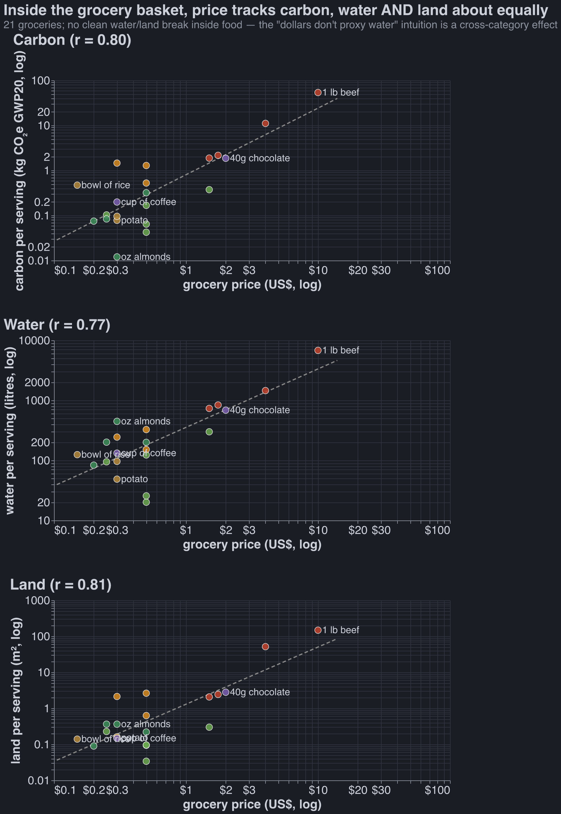
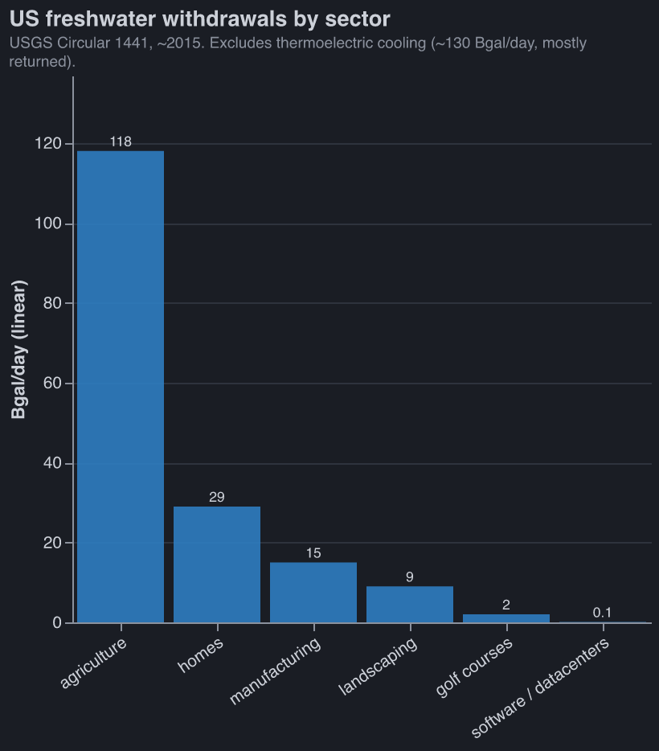
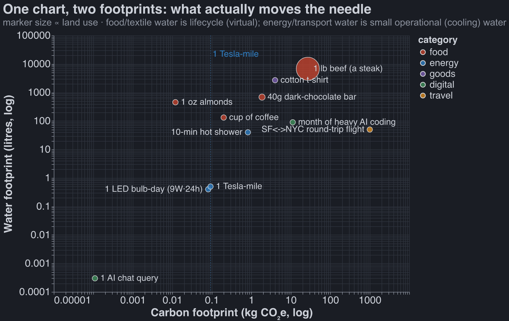

Plastic Straws
Stop Worrying About Your Consumption Habits
Published Last edited
Many people before me have dunked on the plastic-straw Nazis. From a utilitarian perspective, using a paper straw is close to pointless. [1]
Is it worth my mental energy to think about the externalities of my consumption? In the post-singularity utopia, we will price externalities, and no one besides the externality-pricers will have to think about this. For now, if you’re going to think about anything, just let it be your food and travel.
TLDR: These things might matter:
- Eating meat
- Traveling long distances[2]
- Anything that costs a lot of money
Worth zero mental energy:
- Creating less trash, recycling, composting, buying fewer things
- Eating organic, eating local
- Any label that tries to convince me a product is ethical (aside from possibly ones to do with animal welfare)
- Carbon footprint, outside of travel
I: Methodology #
Probably Approximately Correct #
Claude found basically all of the numbers for this article, and for 20% of numbers it actually told me what I should care about. I strongly believe in the power of working with approximately correct numbers - most of my conclusions don’t change unless Claude was wrong by several OOMs, which doesn’t happen often.
Animal Welfare #
See my thoughts [here](substack todo fix this)
Global Warming #
In my inside view of the world, I care a very small amount about reducing my carbon footprint. I think it’s quite likely we get something singularity-like in the next 20 years. In that time global warming won’t do much harm. But out of epistemic humility, I still try to reduct my carbon footprint.
This post uses GWP20 C02e to model carbon footprint. The gist of it is: how much warming will be caused over the next 20 years by emitting one ton of C02? You can then put other things on the same scale: a ton of methane is ~80 C02e, a flight from SF to NYC is ~2-3 tons C02e (much more than you’d expect from the ~1 ton of pure carbon emissions: physicists think that atmospheric contrails caused by planes have a large warming effect).
It’s convention to use GWP100. I am using GWP20 because I believe that
- interest rates are real and your model of the world should account for them. The price of treasuries suggest that $1 today is worth 39c in 2046 and ~.6c in 2126.
- the singularity is nigh.
Reader beware: methane (from trash or cows) is ~3x less c02e when using GWP100.
Land Use, Water Use #
I think these things matter, and I tried to quantify how your decisions affect each. But in my heart of hearts, I don’t think you should spend much energy optimizing for either. I think we should just make (a lot more!) national parks and then price and tax land. [3]
II: Things You Shouldn’t Care About #
My main goal in writing this essay was reducing how much I think about my consumption. A list of things you can safely stop worrying about:
Buying Local #
Shipping food in a container on a cargo ship is basically free, economically and from a carbon perspective. In many cases it’s much more environmentally friendly to just ship stuff from where it grows easily.[4]
Wasting Vegan Food #
All of your food carbon footprint is in meat/dairy. Pound for pound, a loaf of bread is ~90× less bad than a steak (~1.4 vs ~120–200 kg CO₂e/kg at GWP20). Buy fresh loaves and toss them when they’re stale.
Reducing, Reusing, Recycling, Composting #
Each year Americans send about 243 million cubic yards of trash to landfill. which means we must create ~1,500 acres of dumps (at 100 ft deep).
After 100 years a landfill gets covered and becomes a park, a golf course, a conservation area, or a solar farm. Assume, conservatively[5], that one acre of new landfill is as bad as 100 acres of farmland.
The average American’s annual landfill use is about 20 cubic feet, or of landfill area. It takes ~1,590 sq ft to create a 1-lb steak, so your year of trash is steaks: about 1/80th of a steak, even after the 100x penalty.
No one has done a rigorous study showing that microplastics meaningfully impact health. Even if you are worried about them, vanishingly little exposure comes from plastic that properly makes it to landfill.
Warming is also negligible here: The average American’s landfill methane emissions is ~0.53 t CO2e, or about 1/5 of one SF↔NYC round-trip flight or ~10 steaks. And this mostly captured anyway. [6]
Organic foods #
I am not convinced that organic food creates more fewer externalities than normal produce.
Here are Claude’s most important reasons why organic might be worse:
- It uses a lot more land. Organic yields run ~20-25% lower, so growing the same amount of food takes ~25-33% more farmland.
- Banning GMOs makes the land problem worse. Organic prohibits GMOs. But GM crops raise yields (killing them drops US corn ~11%, soy ~5%, cotton ~19%).
- It is not pesticide-free. Organic bans synthetic pesticides but allows a long list of “natural” ones: copper (a heavy metal that never degrades and builds up in soil), sulfur, pyrethrin (toxic to bees and fish), and until ~2007 rotenone (the one they use to give lab rats Parkinson’s).
- More tillage, more manure. No synthetic herbicides means more plowing for weeds (erosion, diesel), and fertility often comes from manure (a pathogen and runoff vector).
I asked Claude for reasons why Organic farming is better, but it read the above and came up with three bullets that show the opposite. Opus was feeling extra sycophantic today.
- ~4× fewer synthetic-pesticide residues: (11% of samples vs 46% for conventional). Organic bans synthetic nitrogen fertilizer and cuts cadmium ~in half. Conventonal residues sit well below safety limits, so the personal health case is thin.
- Farmworker pesticide exposure: Conventional US farms spray ~1 billion lb of synthetic pesticides a year, and globally acute pesticide poisoning hits an estimated hundreds of millions of farmworkers a year (mostly poor-PPE, developing-world farms). But organic farming doesn’t necessarily improve this situation. Sulfur, the primary organic fungicide, is the top reported cause of pesticide illness in California.
- Biodiversity per acre: Organic fields hold ~30% more species and ~50% more animals. But they need ~30% more land per calorie grown, so you gain ~nothing.
Most Labels On Consumables (eg no bycatch, FSC certified wood) #
Possibly Worthwhile: #
- Energy Star: Its appliances saved ~520 billion kWh in 2020 (~400 Mt CO₂e, the annual power of ~50M homes), and EPA reckons ~$350 saved per $1 it spent.
- Certain Animal Welfare Labels: the ones backed by real on-farm audits — Animal Welfare Approved (gold standard: independent auditors visit every farm yearly, the only label Consumer Reports rated “excellent”); Certified Humane (100% pass/fail, on-site audited); Global Animal Partnership (Whole Foods’ 1–5+ steps, higher = better); USDA Organic (real audits, required outdoor access). The tell is a third party auditing the farm: the Animal Welfare Institute found >80% of USDA-approved “animal-raising” claims had no supporting evidence beyond the producer’s own word.
Probably Not Worthwhile: #
- Dolphin-safe tuna: eastern-Pacific dolphin kills fell ~99% (132,000/yr → ~800). Caveats: that was mostly the 1990 law, and the nets it pushed boats toward kill millions of sharks instead.
- FSC wood: genuinely mixed — a 2024 Nature study found more wildlife in FSC forests, but Greenpeace quit FSC in 2018, calling it greenwashing.
Definitely Pointless: #
- Rainforest Alliance: the premium that reaches the farmer is under a penny per chocolate bar (<1% of the cocoa price).
- Fairtrade: a little more (~1–2¢/bar), but it goes to the co-op, not the farmer.
- MSC “sustainable” seafood: funded by logo fees on the very products it certifies, and it’s rubber-stamped plenty of contested fisheries.
- “No bycatch” / “natural” / “eco”: unregulated marketing with no audit behind them.
- Many Animal Welfare Labels: “Natural” on eggs / meat (meaningless); “No Hormones” on meat (this is banned anyway); “Vegetarian-fed poultry” (chickens are omnivores).
III: An Bucket Of Data, And Things That Might Matter #
Carbon Footprint #
Carbon costs correlate with dollar costs, r = 0.87. If you budget your spending, to some extent you’re already optimizing for reducing externalities.

This is also generally true of land and water use. Graphs for food in particular:
@ Claude we have those three other graphs with just food and cost vs land/water/carbon use Can we plz put just the land and water ones up here please?
Looked at another way: carbon footprint per dollar spent does span two OOMs. This is viewpoint is less comforting.

Quotidian Water Use #
The only thing that matters here is what you eat. Definitely don’t feel guilty about taking a long shower.



Freshwater withdrawals, US, ~2015 (USGS Circular 1441); total ≈ 281 Bgal/day. Biggest omission: thermoelectric power-plant cooling (~130 Bgal/day, ~46%), withdrawn then mostly returned. Landscaping is the outdoor slice of “homes” plus commercial turf; datacenters’ ~0.1 Bgal/day is direct on-site cooling (indirect water via their electricity is several× that — still a rounding error). See below on withdrawals vs. consumption.
US gallons; food/textile figures are total (virtual/lifecycle) water. Steak = 1 lb beef (~1,800 gal), matching the 1-lb steak used elsewhere — a ~½-lb portion is ~900 gal. Almonds: ~1,900 gal/lb is the full LCA footprint (~16,000 L/kg); the viral “~1 gal/almond” (~400 gal/lb) is a narrower blue-water figure. Toilet: ~3.5 gal is an old high-flush unit; modern US toilets are 1.6 gal (WaterSense 1.28). The t-shirt’s ~700 gal is mostly rainfall on cotton, not tap water. Bread ≈ a ~500 g loaf. AI water is operational cooling — ~0.0001 gal/query (Altman’s ~0.32 mL; the viral “~500 mL” figure is per session, not per query), and the $200 plan “used fully” ≈ all-day agentic coding at ~30 kWh/mo.
Agriculture is ~42% of US freshwater withdrawals (nearly all irrigation) and ~80–90% of consumptive use; self-supplied industry is ~5% of withdrawals, and public supply (all homes + businesses) ~12%. Withdrawals vs. consumptive is the key distinction — most home and industrial water is returned to the source, whereas irrigation is mostly consumed.
Charts #

(Need to fix this one)
Appendix #
Recycling #
People will actually pay for recycled cardboard and aluminum, whereas recycled plastic and glass is mostly only used because of mandates or to please consumers.
Here is a table showing how much co2e you can expect so save from recycling various things:
Per ton, by material (US, 2018; “thrown away” = sent to landfill):
| material | tons landfilled / yr | CO2e saved per ton recycled | total, if all of it were recycled |
|---|---|---|---|
| aluminum (cans) | 1.2M (of 2.7M all aluminum) | 9.1 t | 11 MMT (24 if all aluminum) |
| paper & cardboard | 17.2M | 3.5 t | 60 MMT |
| plastics | 27.0M | 1.0 t | 27 MMT (upper bound) |
| glass | 7.6M | 0.3 t | 2.3 MMT |

Per item:
| item | CO2e saved by recycling one |
|---|---|
| 1 cubic-foot cardboard box (hollow, single-wall) | 0.84 kg (9 Tesla-miles) |
| 1 aluminum can (12 oz) | 0.13 kg (1.4 Tesla-miles) |
| 1 glass soda bottle (12 oz) | 0.07 kg (0.7 Tesla-miles) |
| 1 PET soda bottle (12 oz) | 0.02 kg (0.2 Tesla-miles) |

Sources: EPA Facts & Figures 2018 (tonnage), EPA WARM v15 (per-ton CO2e). Per-item weights are assumed — can ≈13 g, box ≈225 g, glass bottle ≈200 g, PET 12 oz ≈15 g — and are the least-certain inputs. These savings are almost all avoided CO2 (smelting/pulping energy), so GWP20 ≈ GWP100 here. “Plastics, if all recycled” is an upper bound: most of those 27M tons have no real recycling path.
Quotidian Power Use #
There were no big surprises for me here. Driving is expensive. AI can use a lot of power, but only if you’re coding with it. Lightbulbs use small but nonzero energy.
(All numbers approximate)
| item | kWh | CO₂e |
|---|---|---|
| one ChatGPT/Claude chat query | 0.0003 | 0.1 g |
| one lightbulb-hour (9W LED) | 0.009 | 3 g |
| one washer run (cold, machine only) | 0.5 | 0.2 kg |
| heating the water for a 5-min hot shower | 1.1 | 0.4 kg |
| one dryer run (electric) | 3 | 1.1 kg |
| one month of Claude Max ($200) | 3 (chat) → tens (all-day agentic coding) | 1–11 kg |
| one Tesla mile | 0.25 | 93 g |
| one Ford F-150 mile (gas, 20 mpg) | 1.7[7] | 0.44 kg |
| average American’s daily lighting (per household) | 1.8 | 0.65 kg |
| average American’s daily food | ill-defined | ~10 kg (GWP20; ~6.5 at GWP100) |
| average American’s daily home use (excl. driving/food, per household) | 30 | 11 kg |
| average American’s daily driving (per driver, 37 mi) | 52[7] | 14 kg |

My plausible explanations are innumeracy or costly signaling/symbolism (see The Toxoplasma of Rage). ↩︎
Cars and planes use a pretty similar amount of carbon per human mile traveled, but certainly not per human hour spent traveling. ↩︎
Some supermarkets will fly in produce, which seems bad, but I don’t know any heuristics for telling what has been flown (and not trucked or cargo-shipped) besides “avoid sashimi-grade fish from afar and berries with a huge price tag.” ↩︎
It’s actually very generous to the anti-trash side to say that creating an acre of landfill is as bad as creating 100 acres of farmland: discount rates imply that one year of landfill in 2126 is as bad as one year of landfill in 2026. And farmland is fertile land that would counterfactually be biodiverse nature, which is not true of landfill. ↩︎
If you do care, you should put your energy into making sure you recycle your aluminum and cardboard, see appendix. ↩︎
This is fuel energy — the chemical energy in the gasoline — not electricity, so it isn’t apples-to-apples with the EV rows on the kWh column (a gallon of gas holds ~33.7 kWh). The CO₂e column is comparable across every row. ↩︎